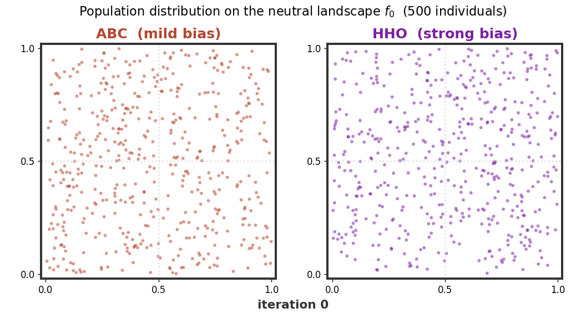

Investigating Structural Bias in the Artificial Bee Colony Algorithm: A Systematic Analysis
Department of Mathematics, Indian Institute of Technology Roorkee, India
Overview
Since its introduction in 2005, the Artificial Bee Colony (ABC) algorithm has been applied across countless optimization problems — yet its intrinsic search dynamics have rarely been examined. This work provides the first systematic analysis of structural bias in ABC, the tendency of an algorithm to favour particular regions of the search space regardless of the objective.
Using two complementary diagnostics — the BIAS toolbox and the Generalized Signature Test (GST) — we answer five research questions about ABC's internal behaviour and benchmark it against GA, PSO, DE, and the contemporary metaheuristics WOA, GWO, and HHO.
- ABC shows only a minor center bias, ranking second — just behind Differential Evolution — among eight algorithms in structural neutrality.
- The bias emerges within the first ~10 iterations and remains stable thereafter, driven largely by the scout-bee mechanism.
- The two diagnostics agree once reconciled: ABC's coordinate-wise update is centroid-attracting, producing center clustering (GST) and mild discretization (BIAS toolbox) as two facets of one phenomenon.
- The perturbation range φ is the dominant control parameter; population size and the limit parameter have negligible effect.


Performance Implications of the Bias
To connect the measured bias to optimization behaviour, a Center-Offset experiment places the optimum at five locations across the domain under several constrained budgets. ABC's accuracy degrades monotonically and symmetrically with the optimum's distance from the center — the direct performance signature of a mild center-directed bias, which gradually washes out as the budget grows.


BibTeX
@article{rajwar_abc_structural_bias,
title = {Investigating Structural Bias in the Artificial Bee
Colony Algorithm: A Systematic Analysis},
author = {Rajwar, Kanchan},
journal = {Applied Soft Computing},
year = {2026},
note = {Under review; citation to be updated on acceptance}
}
Methodology reference (Generalized Signature Test):
@article{rajwar2024gst,
title = {Uncovering structural bias in population-based optimization
algorithms: A theoretical and simulation-based analysis of
the Generalized Signature Test},
author = {Rajwar, Kanchan and Deep, Kusum},
journal = {Expert Systems with Applications},
volume = {240}, pages = {122332}, year = {2024},
doi = {10.1016/j.eswa.2023.122332}
}